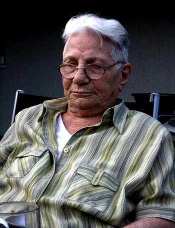
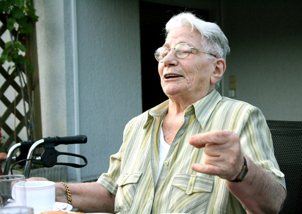
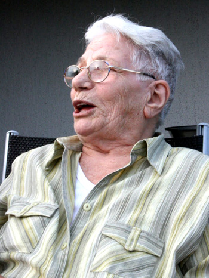

|
|

راضیه شعبانی، زنی که تاریخ در برابر او کم می آورد/ خدیجه مقدم
جمعه13 بهمن 1391
یاد و خاطره ی راضیه غلامی شعبانی گرامی !

تغییر برای برابری - سه روز است که راضیه خاله را از دست داده ایم، تمام مدت گیج و منگ، مشغول مرور خاطرات مشترک تلخ و شیرینی بوده ام که در ذهنم رژه می رود و یادگار اوست. خاطرات او، تاثیراتی که از عملکرد، مبارزه و پایداری اش بر ذهن ها به جای گذاشته، همواره حاضر است، حتی اگر نبود و حتی کنون که نیست.
راضیه غلامی شعبانی از اولین زنان مبارز سیاسی ایران در دوره محمد رضا شاه بود که شش سال از جوانی اش را در زندان های تهران و تبریزاز سال 1325 تا 1331 سپری کرد. البته قبل از او در دوران مشروطیت و بعد در دوره ی رضا شاه، پای زنان مبارزی چون شوکت روستا به زندان باز شده بود. شاید راضیه اولین زن زندانی بعد از 1320 باشد.
او مانند بسیاری از رفقایش، پس از آزادی از زندان، به شوروی مهاجرت کرد. نمی خواهم از زندگی سخت و پر فراز و نشیب راضیه بگویم که در کتاب" خاطرات یک زن توده ای" مفصل آمده است. راضیه و رضا ابراهیم زاده همسرش، یکی از فعالان کارگری و سندیکالیست معروف شرکت راه آهن، در خانواده ی ما، سمبلی از شجاعت بودند. قصه مبارزات راضیه همیشه نقل زبان مادر و پدر و بزرگترهای فامیل ما بود. راضیه علاقه زیادی به عباس عموی ما داشت تا جایی که در کتاب خاطرات اش عکسی از او را به عنوان یکی از بهترین رفقایش آورده است. عباس عمو هم علاقه زیادی به راضیه داشت و زمانی او با سه برادر و همسران شان و رضا ابراهیم زاده و راضیه همه در یک خانه حوالی میدان ژاله ی تهران در طبقات مختلف، زندگی می کردند.
شانزده ساله بودم وسرمست جوانی، دامن کوتاهی پوشیده بودم و موهایم دور شانه هایم افشان بود که عباس عمو مرا در خیابان دید. مثل این که از سر و وضع من خوشش نیامده باشد مطابق معمول، شروع کرد از راضیه تعریف کردن که راضیه در شانزده سالگی تپانچه به کمر داشت و چنین و چنان بود. آن قدر گفت و گفت تا رسید به بهار پراگ و هواپیماهای شوروی و... دلم می خواست فریاد بزنم که دوست ندارم تپانچه داشته باشم و این قدر راضیه را به سر من نکوبید اما نگفتم.

مدتی پس از انقلاب بهمن 1357، راضیه به ایران بازگشت و دوباره وارد خانواده ما شد. خاله راضیه بزرگ فامیل و خاله ی همه ی ما شد. تا جایی که در سال 1364 با همه ی در بدری های هولناک، تولد شصت سالگی خاله را در آخرین روزهای عمر عباس عمو، با جشنی به یاد ماندنی برگزار کردیم. بعد از مدت کوتاهی، با همه بیزاریی که از مهاجرت داشت، کشور آلمان را برای زندگی انتخاب کرد ولی خوشبختانه، این بار رابطه ها قطع نشد.
خاله راضیه سیاسی بود و به مسائل زنان خیلی اهمیت نمی داد. مردانه فکر می کرد و نگاه زنانه نداشت، هر چند با درد و رنج زنان از کودکی آشنا بود ولی خود مانند مردان فکر و رفتار می کرد و نگاه فمینیستی نداشت، به طوری که زنان را مقصر جایگاه ضعیف شان می دانست و خود را مثال می زد که همیشه قدرتمند بوده است. خوشبختانه روحیه ی جوان و پویایش و علاقه وافر او به همنشینی با جوان ها و بعد ترمعاشرت با زنان فمینیست ایرانی در اروپا او را به سرعت تبدیل به یکی از فعالان جنبش زنان شد و توجه ویژه ای به حقوق زنان از خود نشان داد. توجه و قدر شناسی فعالان جنبش زنان در داخل و خارج از کشور از راضیه به عنوان یکی از اولین زنان زندانی سیاسی و بدون سوء استفاده های سیاسی، نقش موثری در این امر داشت. رشد نگاه برابر خواهانه در راضیه به وضوح دیده می شد. اخبار جنبش زنان در داخل ایران را دقیق پی می گرفت و از حرکت کمپین یک میلیون امضا خیلی خوشحال بود. در یکی از صحبت های تلفنی که با هم داشتیم می گفت خیلی امیدوار شده ام، تبعیض ها و نابرابری هایی که برای زنان هست بین توده های مردم رفته است. شما جامعه را برای برابری آماده می کنید. من به شما افتخار می کنم.

بعد از مدتی دوباره تماس گرفت که من چه طور امضاها را برسانیم و آن قدر با هوش بود که گفت فاکس که فایده ای ندارد باید امضا اصل باشد. پست هم نمی کنم چون می ترسم به دستت نرسد و تعریف کرد که در سفری که به سوئد داشته در مراسمی، کمپین یک میلیون امضا را معرفی کرده و همان جا تعدادی امضا و 700 کرون سوئد کمک مالی جمع آوری کرده است. بعد از مدت کوتاهی، هم امضاها و هم کمک مالی توسط مسافری که به ایران می آمد به دستم رسید. و این بهترین هدیه ای بود که در عمرم از خاله گرفتم. بعد از آن در سفرهایی که خاله را می دیدم به عنوان یک عضو فعال کمپین مسائل را پیگیری می کرد که چه تعداد امضا جمع شده ؟ کی امضاها را به مجلس خواهید برد و به کدام مجلس ؟ و....
پس از جنبش سبز خاله راضیه بیشتر امیدوار شده بود که روزی به ایران باز خواهد گشت ولی بعد از مدت کوتاهی نا امید و دلسرد شد و از زندگی در ایران قطع امید کرد. چند ماه پیش وقتی با خواهرم که از ایران آمده بود به دیدارش رفتیم، گفت : «من دیگر دارم از پای در می آیم این بیماری به من امان نخواهد داد. فقط باید قول بدهید مرا در ایران به خاک بسپارید.» در خواستی کوچک از زنی بزرگ و عاشق زندگی بود، هرچند می دانست قادر به انجامش نیستیم.